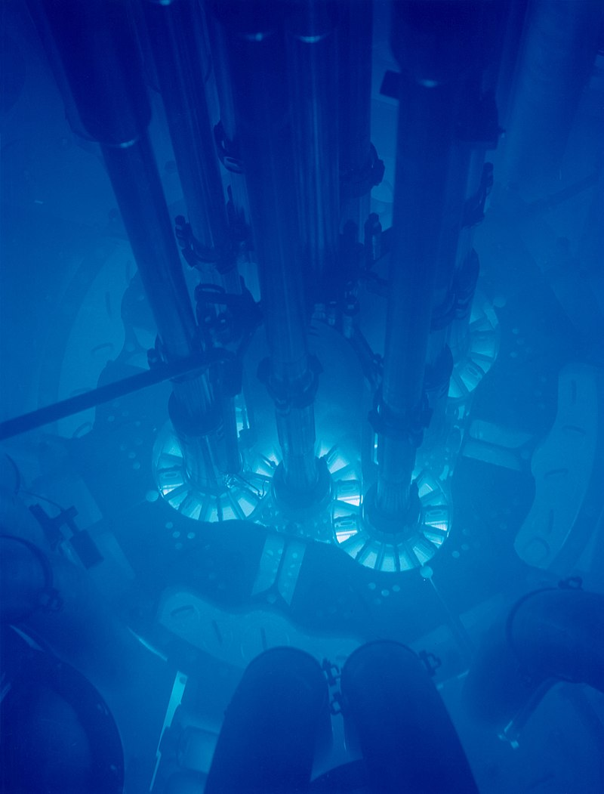
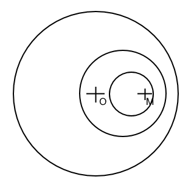
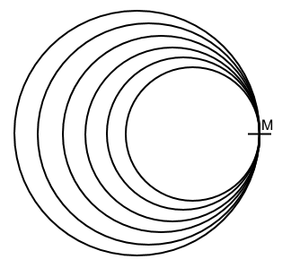

Introduction

L'effet Cherenkov est à la cause de la caractéristique lueur bleue des réacteurs nucléaires dites "à piscine"
Lorsqu'une particule se déplace à un vitesse supérieure à la lumière dans un milieu diélectrique (tel l'eau), alors on peut observer une onde de choc électromagnétique crééant cette lueur caractéristique : la radiation de Cherenkov.
Nous essayerons dans ce projet de comprendre les applications de cet effet pour la détection de particules tels les neutrinos.
Pour cela, nous utiliserons l'onde du choc caractéristique provoquée par un déplacement classique super-sonique et nous étudierons d'un point de vue relativiste la radiation de Cherenkov.
Le mur du son
Formalisme
Lorsqu'une particule se déplace dans l'air, elle créé des perturbations sphériques ayant pour centre la particule, se déplaçant à la vitesse du son.
Afin de faciliter les calculs, nous étudierons ces perturbations en deux dimensions uniquement.
Etude de l'onde de choc
Notations
Notons $s$ la vitesse du son, $v$ la vitesse du mobile.
Vitesse sub-sonique
Lorsque le mobile se déplace à vitesse sub-sonique, nous allons montrer que le mobile reste à l'intérieur de chacune des perturbations qu'il émet.

Chaque perturbation se déplace plus vite que le mobile, il alors est impossible pour le mobile de les dépasser.
Vitesse sonique
Si le mobile se déplace à une vitesse sonique, alors les perturbations s'agglomèrent devant le mobile.

Alors, le mobile est soumis à une pression très forte.
Vitesse super-sonique
Notons $Δt_0$ la durée $t-τ_0$ où $t$ représente le moment où le mobile se trouve au point M et $τ$ le moment où le mobile se trouve au point O
Déterminons le rayon de chaque perturbation par rapport à l'instant où elle fut produite.
La vitesse de propagation d'une perturbation est égale à la vitesse $s$ du son. Alors, si on note $τ_n$ l'instant où la perturbation n s'est produite, alors son rayon $R$ est de $$R(τ_n) = Δt_ns = (t-τ_n)s = ts-τ_ns$$ Or, $t$ et $s$ sont des constantes, on a ainsi bien l'équation d'une droite. Ainsi, les perturbations forment un cône de sommet M, la position du mobile à l'instant $t$.

Pour calculer l'angle du cône, nous prendrons la première perturbation émise au point O. $$\sin\alpha=\frac{OC}{OM}=\frac{Δt_0s}{Δt_0v}=\frac{s}{v}$$
Représentons un cas pratique. Un avion effectue un vol horizontal à $h = 10km$ d'altitude. A un instant $t$ un observateur au sol $O$ perçoit un claquement représentant l'onde de choc faisant un angle de 45° avec l'horizontale. Alors, si on prend $s = 349m/s$ on a $$\sin45°=\frac{s}{v}=\frac{349}{v}$$Or, $\sin45° = \frac{\sqrt{2}}{2}$, donc : $$\frac{\sqrt{2}}{2}=\frac{349}{v}$$ $$\frac{698}{\sqrt{2}}=v=493.56m/s$$
L'effet Cherenkov
Formalisme
Lorsqu'un électron se déplace dans un milieu diélectrique à une vitesse supérieure à celle de la lumière dans ce premier, il se produit une onde de choc lumineuse analogue à l'onde de choc acoustique. Nous n'entrerons pas dans les détails de comment cette onde de choc est crée : cela dépasse le cadre du cours de mécanique relativiste.
Ainsi, de la même manière que pour le mur du son, nous pouvons calculer l'angle formé par le cône de l'onde de choc.
Etudions le cas d'un électron de masse $m$ se déplaçant à une vitesse $\vec{v_0}$ dans un milieu d'indice $n$ un autre électron et un photon de fréquence $\nu$ émis en faisant un angle $\theta$ par rapport à la direction de $\vec{v_0}$. Calculons $\cos\theta$.
En physique relativiste, les lois de la conservation de la quantité de mouvement et de la conservation de l'énergie nous permettent d'établir :
$$p_1-p_2 = p_3$$ $$E_1-E_2=E_3$$
Où $p_1$, $p_2$ et $p_3$ correspondent respectivement à la quantité de mouvement de l'électron avant l'émission, à la quantité de mouvement du photon et à la quantité de mouvement de l'électron après émission. De la même manière $E$ représente l'énergie de la particule associée par indice
$E_2 = h\nu$, il s'agit de l'énergie d'un photon d'après la relation de Planck-Einstein. D'après la relation d'énergie-impulsion, on a $E_1 = (m^2c^4+c^2{p_1}^2)^{\frac{1}{2}}$, $E_3 = (m^2c^4+c^2{p_3}^2)^{\frac{1}{2}}$. Ainsi, on a de la relation de conservation d'énergie :
$$(m^2c^4+c^2{p_1}^2)^{\frac{1}{2}} - h\nu = (m^2c^4+c^2{p_3}^2)^{\frac{1}{2}}$$
En mettant chaque équation au carré et réarrangeant les termes :
$$\begin{cases}c^2{p_1}^2 + h^2\nu^2 - 2h\nu E = c^2{p_3}^2\\
{p_1}^2+{p_2}^2-2p_1p_2\cos\theta = {p_3}^2\end{cases}$$
On insère ${p_3}^2$ dans l'équation de l'énergie :
$$c^2{p_1}^2 + h^2\nu^2 - 2h\nu E = c^2({p_1}^2+{p_2}^2-2p_1p_2\cos\theta)\\
h^2\nu^2 - 2h\nu E = c^2{p_2}^2-c^22p_1p_2\cos\theta\\
\cos\theta = \frac{-h^2\nu^2 + 2h\nu E + c^2{p_2}^2}{c^22p_1p_2}$$
Or $p_2 = \frac{h\nu n}{c}$ car la vitesse du photon est de $\frac{c}{n}$
$$\cos\theta = \frac{-h^2\nu^2 + 2h\nu E + c^2{(\frac{h\nu n}{c})}^2}{c^22p_1(\frac{h\nu n}{c})}\\
\cos\theta = \frac{-h^2\nu^2 + 2h\nu E + h^2\nu^2 n^2}{2cp_1h\nu n}\\
\cos\theta = \frac{2E + h\nu (n^2-1)}{2cp_1 n}$$
Ainsi, on a une expression de l'angle de la radiation émise par l'électron.
Dans le vide, la longueur d'onde de la lumière émise est de l'ordre de $\lambda = 0.45\mu m$. On a $m_e = 9\times 10^{-31} \text{kg}$ masse de l'électron, $h=6.62\times 10^{-34} \text{SI}$. Montrons que l'expression de l'angle se simplifie, et que la radiation de Cherenkov ne peut exister que si la vitesse de la particule est supérieure à la vitesse de la lumière dans le milieu traversé.
$$\frac{c}{\lambda} = \nu \\ \nu = 6.662 \times 10^{14} \text{Hz}$$ Pour $\lambda$, on a $hv \rightarrow 0$. Alors on peut simplifier $\cos\theta$ : $$\cos\theta = \frac{E}{cp_1 n}$$
Or, $\frac{E}{cp_1} = \frac{1}{\beta}$, alors :
$$\cos\theta = \frac{1}{\beta n}\\
\cos\theta = \frac{c}{v n}$$Pour qu'un électron puisse produire une radiation de Cherenkov, il faut alors que sa vitesse soit supérieure à $\frac{c}{n}$.
Pour l'eau, ayant un indice $n \simeq 4/3$, on peut calculer l'énergie minimale des électrons pouvant produire l'effet Cherenkov.
$$v > \frac{c}{n} > 2.25 \times 10^{8} \text{m/s}\\ E_{min} = mc^2\gamma = 1.22 \times 10^{-13} \text{J} = 0.76 \text{MeV}$$